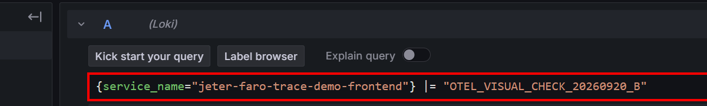
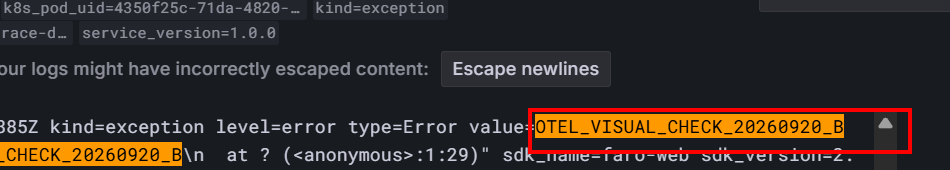

Milestone 5 · 同一個 /alloy 入口，為什麼有些資料最後在 Loki，有些卻進 Tempo？
/alloy 就把所有資料當成同一種東西。
Lesson 5 已經建立一個重要前提：一筆 business request 可以被不同 instrumentation 觀察，產生不同 Faro telemetry，也可能形成多筆 POST /alloy。Lesson 9 從這個邊界往後追。
Browser 把資料送到同一個 Alloy endpoint，不代表 downstream 會走同一條 pipeline，也不代表最後會進同一個 storage。
Jeter stage 的 runtime evidence 已經驗證：一次 GET /api/scenario/employee/1001 產生了至少兩種不同 telemetry。
POST /alloy A
events[]
└─ name = faro.performance.resource
POST /alloy B
events[]
└─ name = faro.tracing.fetch
traces
└─ resourceSpans = [...]這裡最容易犯的錯，是把「兩筆 /alloy POST」理解成「同一份資料送了兩次」。真正要先看的不是 HTTP request 數量，而是 payload 裡裝的是什麼。
faro.performance.resource 在 Browser payload 裡是 Faro event；tracing payload 裡的 resourceSpans 才是 span / trace signal。兩者可以描述同一筆 business HTTP request，但不是同一種 telemetry object。
Runtime basis：Jeter faro.performance.resource runtime verification。Primary material 也把 Faro instrumentation 收集的 events / logs / exceptions / measurements / meta 與 tracing capability 分開描述：Grafana Faro & Alloy - 前端可觀測性。
Browser 送的是 Faro payload。現行架構不是讓 Browser 直接講 OTLP 給 Collector，而是先把 Faro HTTP payload 交給 Alloy 的 Faro receiver。
POST /alloyotelcol.receiver.faro "frontend"目前 listen port 為 12347；接收 Faro payload，並把可輸出的資料交給 OTel logs / traces 路徑。所以這裡的 receiver 可以先用最具體的方式理解：
現行 stage / prod runtime 都由 Alloy 接 Faro；Alloy 再用 OTLP gRPC 把資料送到 opentelemetry-collector.open-telemetry.svc.cluster.local:4317。Collector 本身不需要再開第二個 Faro receiver。
Configuration basis：Deploy Alloy Server - Production；current runtime verification：Browser Faro endpoint and Alloy receiver、Alloy → OTel Collector pipeline。
因為 OTel Collector pipeline 不是按照「這些資料是不是來自同一個網站」分流，而是按照 signal type 分流。
faro.performance.resource event 會成為 OTLP log record。logs pipeline目前 stage 由 OTLP receiver 接收，經處理後送 Loki gateway。resourceSpans 是 span / trace data。traces pipeline目前 stage 會經 attribute / resource / filter / batch 等 processor，再 export 到 Tempo distributor。因此，Alloy endpoint 相同只代表它們從同一個 Faro ingress 進來；後續走哪條路，要看 receiver 轉成哪一種 OTel signal。
| 元件 | 你可以問的問題 | Lesson 9 的實例 |
|---|---|---|
| Receiver | 「資料從哪個 protocol / endpoint 進來？」 | Alloy Faro receiver 接 Browser Faro；Collector OTLP receiver 接 Alloy 的 OTLP。 |
| Processor | 「資料進來後，有沒有被 batch、filter、transform 或補 attributes？」 | Alloy 目前先 batch；Collector 的 trace pipeline 還有 attribute / resource / filter / batch。 |
| Exporter | 「處理完後，下一站要送去哪？」 | Alloy OTLP exporter 送 Collector；Collector logs 送 Loki，traces 送 Tempo。 |
這三個角色可以串成一個最小 mental model：
receiver
接進來
↓
processor
中途處理
↓
exporter
送出去但不要把這個圖誤解成「每條 pipeline 永遠只有一個 processor」。Processor 可以有多個，也可能因 signal / environment 不同而不同。
Jeter 的這筆 runtime evidence 不是只看 config 猜路徑；同一個 faro.performance.resource event 已經在 Grafana Loki 查到 matching record。
{service_name="jeter-faro-trace-demo-frontend"}
|= "faro.performance.resource"
|= "/api/scenario/employee/1001"
faro.performance.resource 與同一個 employee API path。它證明我們在 Loki 端主動尋找這個 Browser event，不是在 Tempo 查 span。
kind=event、event_name=faro.performance.resource 與該 API URL。這是 storage visibility evidence；它不代表每一筆 Faro event 都一定能成功走完整條 pipeline。Lesson 9 不把你拉去學完整 Resource Timing API。只保留目前 Mission 會實際用來 debug 的欄位。
| 欄位 | Operational question |
|---|---|
event_data_name | 這筆 record 是哪一個 URL / resource？ |
event_data_responseStatus | Browser 看到什麼 HTTP status？ |
event_data_duration | Browser 觀察到的整體 resource duration 大約多少？ |
event_data_ttfb | 多久後第一個 response byte 可用？ |
event_data_responseTime | response 接收階段花了多少時間？ |
event_data_transferSize | Browser 回報的 transfer data 大小是多少？ |
event_data_cacheHitStatus | Faro 把這次 resource 分類成 cache hit 還是 full load？ |
event_data_initiatorType | 是什麼 Browser initiator 產生這個 resource，例如 fetch？ |
faro.performance.resource 則提供 Browser-side HTTP experience。兩者是互補 evidence。當完整 trace 存在時，trace timing 對 root-cause localization 通常更直接；當 trace 因 sampling、retention 或其他 visibility gap 不存在時，resource event 仍可能提供 Browser evidence。
Field / debugging boundary：runtime verification。DNS / TCP / TLS 等 lower-level sub-timings 只有當 incident 已縮小到 connection setup fault domain 時才需要深入。
把 operational troubleshooting 變成 evidence boundary，而不是看到「Grafana 沒資料」就一次檢查全部。
faro.performance.resource → POST /alloy → Alloy logs output → Collector logs pipeline → Loki matching record。
faro.performance.resource 的 POST /alloy，但 Loki 查不到 matching record；同時間 tracing span 卻能在 Tempo 查到。
這時最重要的推論不是「Faro 壞了」，而是：
Browser event exists
→ event construction 至少有 evidence
trace visible in Tempo
→ trace path 至少有 downstream visibility
resource event missing in Loki
→ 優先縮小 logs path
Alloy logs output
↓
OTLP delivery to Collector
↓
Collector logs pipeline
↓
Loki export / ingest / query visibility也就是說，traces pipeline 成功不能證明 logs pipeline 成功。同一個 Faro receiver 之後，它們已經是不同 signal path。
Current topology / limit：collector-pipeline evidence。目前 evidence 驗證 configuration 與一筆 Loki runtime record，但沒有宣稱所有 Collector queue / retry / acceptance state 都已被量測。
/alloy POST 都描述同一個 business API。哪個判斷最精確？faro.performance.resource 最符合哪條已驗證路徑？/alloy ingress 可以承載不同 Faro telemetry；先看 payload signal，不要先數 request。:4317。faro.performance.resource 在目前 Jeter stage 已驗證為 OTLP log record，最後可在 Loki 查到。resourceSpans 走 traces pipeline，最後進 Tempo；它與 resource-performance event 是不同 signal。完成這堂課的 retrieval 不是背元件名稱，而是拿一筆新的 Faro payload，先說它屬於 logs 還是 traces，再自己畫出它從 Alloy 到 Collector 到 storage 的路徑。我可以直接依你的圖指出第一個責任邊界錯在哪裡。